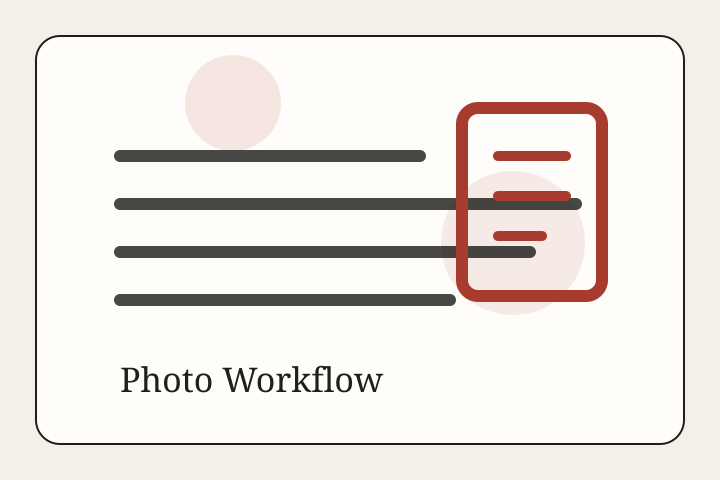

Photo workflow
How story images are chosen and documented
For this prototype edition, each hero image is paired with a public-use or attribution-cleared file page and logged for relevance, creator, and license.

Principles
Do not reuse the same thumbnail for unrelated stories. Match the image to the event, place, institution, or material system the article is actually about. Store the file page, creator, license, and rationale before publication.
In a production newsroom, the next step would be to ingest approved copies locally after license review. This prototype loads from the original public file hosts and keeps a separate record here.
| Story | Desk | Creator / file page | License | Status | Why it fits |
|---|---|---|---|---|---|
| A Country That Cannot Measure Itself Cannot Govern Itself | Opinion | U.S. government / public domain | Public domain | public domain | Census Bureau headquarters is a natural fit for an essay on national measurement and statistical institutions. |
| Streaming Grew Up and Became TV Again. | Culture | Eden, Janine and Jim | CC BY 2.0 | reusable with attribution | A SAG-AFTRA picket line fits a story about streaming, labor contracts, and TV economics. |
| Bird Flu Changed Farm Policy Before It Changed Human Medicine. | Health | USDA / Jim G. Peeples | Public domain | public domain | Dairy cattle photo fits H5N1 farm-policy coverage. |
| Europe’s Defense Turn Is Now a Budget, Supply-Chain, and Time Problem | World | Bart Maat / Ministry of Foreign Affairs of the Netherlands | CC BY-SA 4.0 | reusable with attribution | NATO summit photo directly matches a story about Europe’s defense turn. |
| The College Comeback Is Real. It Is Also Uneven. | Education | IMCBerea College | CC BY 2.0 | reusable with attribution | Campus image fits uneven college enrollment recovery. |
| Shelter Is Still the Inflation Story People Live Inside. | Economics | kallerna | CC BY-SA 4.0 | reusable with attribution | Housing construction is directly relevant to shelter costs and supply. |
| Proof of Citizenship Is Not Just a Voting Rule. It Is a Theory of the Electorate. | Politics | Lorie Shaull | CC BY-SA 2.0 | reusable with attribution | Election signage is directly relevant to a story about voter registration and election administration. |
| Artemis II Proved the Moon Is an Engineering Project Again | Science | NASA / Brandon Hancock | Public domain | public domain | Launch image directly depicts the Artemis II mission discussed in the story. |
| The Missing Word in the AI Debate Is Judgment. | Philosophy | Unknown / public domain | Public domain | public domain | A public-domain Hannah Arendt portrait suits an essay on judgment. |
| Measles Is Not a Childhood Memory Anymore. | Health | Whispyhistory | CC BY-SA 4.0 | reusable with attribution | Vaccination image is directly tied to measles coverage. |
| School Recovery Is Now an Attendance Story. | Education | Jeff chenqinyi | CC BY-SA 3.0 | reusable with attribution | Classroom scene fits reporting on school recovery and attendance. |
| The Consumer Has Not Quit. The Economy Still Feels Cautious. | Economics | Mohamed mfuu | CC BY-SA 4.0 | reusable with attribution | A supermarket checkout visual grounds a consumer-spending and prices story. |
| The Crowd Came Back. The Old Economics Did Not. | Culture | Ken Lund | CC BY-SA 2.0 | reusable with attribution | Broadway streetscape matches story on live audiences and cultural economics. |
| AI Needs Electricity, Steel, and Time | Technology | Hunter Trick | CC BY-SA 4.0 | reusable with attribution | Shows TSMC Fab 21 construction, matching a story about AI infrastructure and chip supply. |
{kind=link}
.jpg){kind=link}
.jpg){kind=link}
.jpg){kind=link}
.jpg){kind=link}
{kind=link}
.jpg){kind=link}
.jpg){kind=link}
{kind=link}
{kind=link}
{kind=link}
{kind=link}
.jpg){kind=link}
{kind=link}